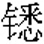
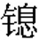
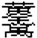

一
以摆脱传统思想的束缚而来主张男女平等的男人，却偏喜欢用轻靓艳丽字样来译外国女人的姓氏：加些草头，女旁，丝旁。不是“思黛儿”，就是“雪琳娜”。西洋和我们虽然远哉遥遥，但姓氏并无男女之别，却和中国一样的，——除掉斯拉夫民族在语尾上略有区别之外。所以如果我们周家的姑娘不另姓绸，陈府上的太太也不另姓蔯，则欧文[14]的小姐正无须改作妪纹，对于托尔斯泰[15]夫人也不必格外费心，特别写成妥嬭丝苔也。
以摆脱传统思想的束缚而来介绍世界文学的文人，却偏喜欢使外国人姓中国姓：Gogol姓郭；Wilde姓王；D'Annunzio姓段，一姓唐；Holz姓何；Gorky姓高；Galsworthy也姓高，[16]假使他谈到Gorky，大概是称他“吾家rky”[17]的了。我真万料不到一本《百家姓》[18]，到现在还有这般伟力。
一月八日。
二
古时候，咱们学化学，在书上很看见许多“金”旁和非“金”旁的古怪字，据说是原质[19]名目，偏旁是表明“金属”或“非金属”的，那一边大概是译音。但是，

，
，锡，错，矽[20]，连化学先生也讲得很费力，总须附加道：“这回是熟悉的悉。这回是休息的息了。这回是常见的锡。”而学生们为要记得符号，仍须另外记住腊丁字。现在渐渐译起有机化学来，因此这类怪字就更多了，也更难了，几个字拼合起来，像贴在商人帐桌面前的将“黄金萬两”拼成一个的怪字[21]一样。中国的化学家多能兼做新仓颉[22]。我想，倘若就用原文，省下造字的功夫来，一定于本职的化学上更其大有成绩，因为中国人的聪明是决不在白种人之下的。在北京常看见各样好地名：辟才胡同，乃兹府，丞相胡同，协资庙，高义伯胡同，贵人关。但探起底细来，据说原是劈柴胡同，奶子府，绳匠胡同，蝎子庙，狗尾巴胡同，鬼门关。字面虽然改了，涵义还依旧。这很使我失望；否则，我将鼓吹改奴隶二字为“弩理”，或是“努礼”，使大家可以永远放心打盹儿，不必再愁什么了。但好在似乎也并没有什么人愁着，爆竹毕毕剥剥地都祀过财神了。
二月十日。
注 释
[13] 本篇最初分两次发表于1925年1月11日、2月12日北京《京报副刊》。
本篇第一节发表后，即遭到廖仲潜、潜源等人的反对，作者为此又写《咬嚼之余》和《咬嚼未始“乏味”》二文（收入《集外集》）予以反驳，可参看。
[14] 欧文 英美人的姓。如美国有散文家华盛顿·欧文（W.Irving，1783—1859）。
[15] 托尔斯泰 俄国人的姓。如俄国作家列夫·托尔斯泰（Л.Н.Толстой，1828—1910）。
[16] Gogol 果戈理（Н.В.Гогoль，1809—1852），曾有人译为郭歌里，俄国作家。Wilde，王尔德（1854—1900），英国作家。D’Annunzio，邓南遮（1863—1938），曾有人译为唐南遮，意大利作家。Holz，何尔兹（1863—1929），德国作家。Gorky，高尔基（M.Γорький，1868—1936），苏联作家。Galsworthy，高尔斯华绥（1867—1933），英国作家。
[17] “吾家rky” 即吾家尔基。旧时常称同宗的人为“吾家某某”；有些人为了攀附名人，连同姓的也都称“吾家某某”。
[18] 《百家姓》 旧时学塾所用的识字课本。宋初人编，系将姓氏连缀为四言韵语，以便诵读。
[19] 原质 元素的旧称。
[20] ，，锡，错，矽 化学元素的旧译名。其中除锡外，其他四种的今译名顺序为铯、锶、铈、硅。
[21] “黄金萬两”拼成的怪字，其形如“

”。[22] 仓颉 亦作苍颉，相传是黄帝的史官，汉字最初的创造者。